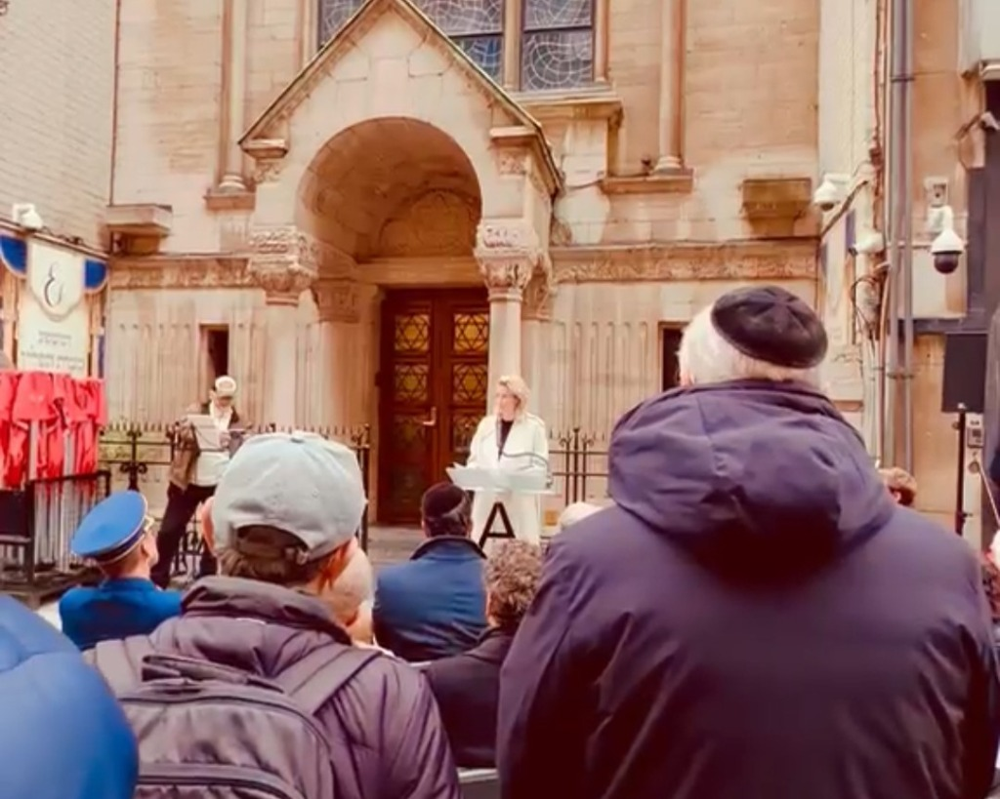

Aperçu : Le mardi 20 octobre 2026, quarante-cinq ans jour pour jour après l'explosion d'une camionnette piégée devant la synagogue portugaise dans le quartier diamantaire d'Anvers, la ville et sa communauté juive se sont réunies dans la Hoveniersstraat pour une cérémonie de recueillement solennelle. Organisée par le Forum des Organisations Juives (FJO), cette commémoration a rassemblé quelque 150 personnes — dont les autorités municipales, des représentants communautaires, des rescapés et des forces de police — afin d'honorer la mémoire des trois victimes décédées, de se souvenir de plus d'une centaine de blessés et de réaffirmer une vigilance sans faille face à l'antisémitisme.
Un rassemblement émouvant dans la Hoveniersstraat
La cérémonie s'est déroulée précisément devant le porche de l'historique synagogue portugaise (érigée en 1913), sur les pavés mêmes où retentit la terrible déflagration le matin du 20 octobre 1981. Fidèles, aînés de la communauté, représentants des autorités civiles et policiers se tenaient côte à côte pour rendre hommage aux disparus.
Des gerbes de fleurs ont été déposées au pied de la synagogue. Une minute de silence a été observée, suivie de la récitation de prières commémoratives et de psaumes en hommage aux victimes fauchées quelques instants avant les offices de la fête de Simchat Torah.
Paroles de mémoire et appel à la lucidité
Plusieurs personnalités ont pris la parole pour exprimer la douleur intacte de la communauté et souligner les exigences du temps présent.
Regina Sluszny, présidente du Forum der Joodse Organisaties (FJO) et elle-même rescapée de la Shoah, a rappelé avec émotion les traumatismes durables causés par cette attaque. Elle a souligné que quarante-cinq années écoulées n'altèrent en rien le devoir sacré de perpétuer le souvenir et d'entourer les familles meurtries.
La bourgmestre d'Anvers faisant fonction, Els van Doesburg, a prononcé un discours marquant au pupitre officiel de la ville. Tout en rappelant l'attachement indéfectible d'Anvers à ses concitoyens juifs, elle a confronté l'assemblée à une vérité poignante : quarante-cinq ans après les faits, la communauté juive est toujours contrainte de vivre sous une protection policière permanente et derrière des périmètres sécurisés.
"Il est profondément douloureux et poignant que quarante-cinq ans après ce lâche attentat terroriste, nos concitoyens juifs ne puissent toujours pas fréquenter leur synagogue ou envoyer leurs enfants à l'école sans mesures de sécurité exceptionnelles et surveillance armée. Nous ne devons jamais nous résigner à ce que l'antisémitisme devienne une fatalité."
Elle a réitéré l'engagement absolu de la métropole d'Anvers à garantir la sécurité et la sérénité de la vie juive, appelant à un sursaut démocratique continu contre la haine, le fanatisme et les discriminations.
Retour sur l'attentat du 20 octobre 1981
Ce moment de mémoire a également permis de transmettre cette histoire aux jeunes générations. Le 20 octobre 1981, une camionnette chargée d'explosifs avait été stationnée la veille sous prétexte d'une roue crevée. Peu après 9 heures du matin, la charge explosa avec une violence inouïe, arrachant les portes massives de la synagogue, pulvérisant les vitraux et les devantures de commerces à des centaines de mètres à la ronde, faisant trois morts et 106 blessés.
Pour consulter l'article d'archive complet retraçant l'attaque, les enquêtes et le contexte de l'époque, lisez : Attentat à la bombe dans la synagogue d'Anvers en 1981.
45 ans de résilience et de rayonnement
Malgré la violence du choc, la communauté juive anversoise n'a jamais cédé à l'effroi. Durant les quatre décennies et demie qui ont suivi, la synagogue portugaise a été soigneusement restaurée, l'activité diamantaire a repris et la vie communautaire continue d'irradier au cœur de la ville.
Cette commémoration des 45 ans a ainsi incarné la victoire de la mémoire, de la continuité et de la dignité sur la terreur.
Références & Pour approfondir
-
Forum der Joodse Organisaties (FJO)
Communiqué officiel sur la commémoration des 45 ans de l'attentat de la Hoveniersstraat, 20 octobre 2026.
-
Archives Historiques Juives d'Anvers — Attentat de 1981 contre la synagogue
Étude historique sur le déroulement des faits et les répercussions de l'attentat.
-
Archives Historiques Juives d'Anvers — La Synagogue Portugaise
Patrimoine architectural et histoire de la communauté séfarade d'Anvers.